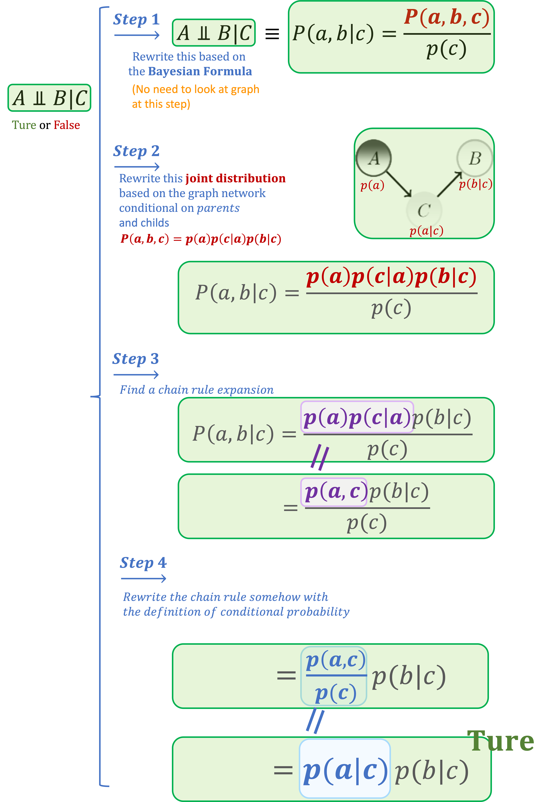
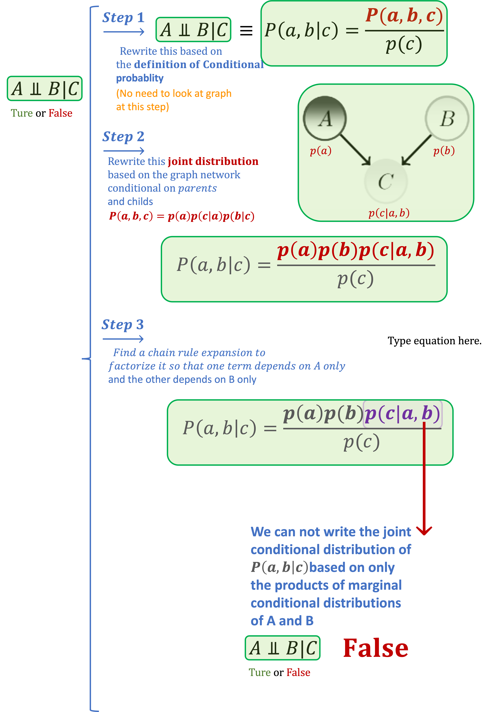

ML Advanced Probabilistic Methods
Review
1. Bayesian Networks
- Bayesian network:
It's a graph and it's a joint distribution that factorizes according to the graph in the way specified by the conditionals extracted from the parents of each node (random variable).- Why to use BNs:
1- Because of Computational Efficiency. In joint Distribution for growing number of random variables, the number of combination of combinations grows exponentially.(BNs, compact and concise way of representing joint distributions)
2- Makes it easy to understand the model structure and dependencies conceptually. Efficient and optimized algorithms for graphs analysis.
- Why to use BNs:
- Independence A ⫫ B or A ⫫ B | E
How to read different independence and conditionally independence statements based on DAG:- A ⫫ B: Are A and B independent
- A ⫫ B | E: Could we say A and B are independent conditionally on E
- D ⫫ E | C:
- A ⫫ B | C: if this statement holds then the joint distribution of a and b conditionally on c p(a,b|c) factorizes into product of p(a|c)p(b|c)
 Example 2

Note:
------- ---- --- ---- ------. ----- ------ -----. - Ways to select between models
- Marginalization:
getting rid of one of the variables in joint probablity distribution with summation over the other parameter - Independence:
p(b)p(m)=p(b, m)